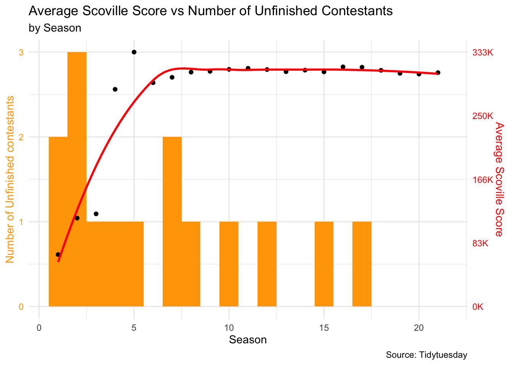
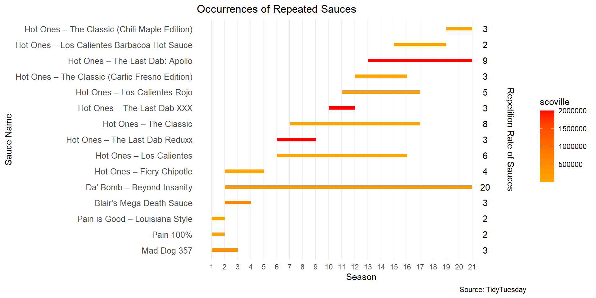

Our comprehensive analysis of the popular YouTube series “Hot Ones” delved into two primary areas of interest.
1. Relationship between Scoville Scores and Failure Rates:
Objective: We aimed to discern the correlation between the spiciness of sauces, as measured by their Scoville scores, and the rate at which contestants failed to try all the sauces in each season.
Methodology: Utilizing datasets “episodes.csv” and “sauces.csv,” we plotted the average Scoville score of each season against the number of contestants who opted out of trying all the sauces. The visualization combined a histogram representing failure counts with a smoothed plot for average Scoville scores.
Findings: Preliminary observations suggest a potential relationship between higher Scoville scores and increased failure rates, indicating that spicier sauces might deter contestants from completing the challenge.
2. Usage Trends of Hot Sauces Across Seasons:
Objective: Our goal was to identify and visualize sauces that have been used in multiple seasons, shedding light on the show’s sauce selection trends and the enduring popularity of certain sauces.
Methodology: Using the “sauces” dataset, we created a line graph to depict the trend of repeated sauces over time. A color gradient scale was incorporated to represent the spiciness level, and text annotations provided exact repetition counts for each sauce.
Findings: “Da’ Bomb – Beyond Insanity” emerged as the most recurrent sauce, appearing 20 times since its introduction in season 2. Interestingly, while many repeated sauces had low to moderate Scoville scores, only a few with very high scores were reused, suggesting a preference for introducing new spicy sauces in subsequent seasons.
In conclusion, our analysis offers a detailed insight into the dynamics of sauce selection in “Hot Ones,” emphasizing the balance the show maintains between challenging contestants with spicy sauces and retaining viewer-favorite flavors.
Question 1: Failure to finish the sauces in relation to scoville score.
Introduction:
Looking at the data set, the first thing that we were interested in finding out was the relation between scoville scores and the failure rate. Different sauces are used for different season so there will be a change in the scoville scores too. Since the scoville score represents the measure of the spiciness of the sauce, it is expected to have an effect on the failure rate because it is natural for more people to give up early if the scoville score of the is too high. In order to validate this, we are planning to plot the average scoville score of each season along with the number of contestants that failed to try all the sauces for each season. We have used the “episodes.csv” and the “sauces.csv” to do the same. We plan on making a histogram for the failure count and a geom_smooth plot for the average scoville score. Both will be plotted in a single plot so that it would be easier to compare the trends between both failure count and average scoville score.
Approach
Histogram:
Purpose: Visualizing the distribution and trend followed by the number of contestants that failed to try all the sauces over the seasons.
Geom_smooth:
Purpose: Visualizing the trend followed by the average scoville score across the seasons.
First, we created a data frame called scoville_scores from sauces.csv which contains the average scoville values(avg_scoville) of each season. Then, we created another data frame called unfinished_df which only contains the rows of episodes.csv in which the participants failed. This is used for plotting the histogram. Since we plan on combining both plots, we create the histogram and store it as a variable plt1. Then we combine it with geom_smooth plot using the + operator.
Since the the failed count and the average scoville scores are in different scales, we have to scale the data to fit both of them in a single plot. So we wrote a function map_y2 to scale average scoville scores in the range of failed count. Since the average scoville scores are 6 digit numbers, we had to clean up the y-axis labels using the number_format function. Along with the geom_smooth plot, we have also added a scatter plot for the average scoville score, so that we can also visualize the actual points instead of just an approximate smoothed function. We have given different colors to the left and right y-axis which corresponds to the color of the plot it represents. This makes it easier to tell which axis belong to which plot.
Analysis
# Importing the required librarieslibrary(readr)library(dplyr)library(scales)library(ggplot2)# Loading Dataepisodes <- readr::read_csv('https://raw.githubusercontent.com/rfordatascience/tidytuesday/master/data/2023/2023-08-08/episodes.csv')sauces <- readr::read_csv('https://raw.githubusercontent.com/rfordatascience/tidytuesday/master/data/2023/2023-08-08/sauces.csv')seasons <- readr::read_csv('https://raw.githubusercontent.com/rfordatascience/tidytuesday/master/data/2023/2023-08-08/seasons.csv')#Creating the data frame with mean scoville score of each seasonscoville_scores <- sauces %>%group_by(season) %>%summarize(avg_scoville =mean(scoville, na.rm =TRUE))# Filtering the columns with unfinished contestantsunfinished_df <- episodes[episodes$finished ==FALSE, ]max_avg_scoville <-max(scoville_scores$avg_scoville)scale_factor <-3/ max_avg_scoville# Function to map_y2 <-function(y) y * scale_factor# Pre-format the labels for the right y-axis using scales::number_formatformatted_labels <-number_format(scale =0.001, accuracy =1, suffix ="K")(c(0.00, 0.75, 1.50, 2.25, 3.00) / scale_factor)plt <-ggplot() +geom_histogram(data = unfinished_df, aes(x = season), fill ="orange", binwidth =1) +theme_minimal() +theme(axis.text.y =element_text(color ="orange"), axis.title.y =element_text(color ="orange"))# Modify the scale_y_continuous function to set the limits for both axesplt +geom_point(data = scoville_scores, aes(season, map_y2(avg_scoville))) +geom_smooth(data = scoville_scores, aes(season, map_y2(avg_scoville)), se =FALSE, color ="red") +labs(x ="Season",y ="Number of Unfinished contestants",title ="Average Scoville Score vs Number of Unfinished Contestants",subtitle ="by Season",caption ="Source: Tidytuesday") +theme(axis.text.y.right =element_text(color ="red"), axis.title.y.right =element_text(color ="red")) +scale_y_continuous(limits =c(0, 3), # Set limits for the left y-axissec.axis =sec_axis(trans =~ . / scale_factor,name ="Average Scoville Score",breaks =seq(0, max_avg_scoville, by = max_avg_scoville /4),labels = formatted_labels ) # Set breaks and labels for the right y-axis )

Discussion
As discussed before, we naturally expect the number of unfinished contestant to increase as the average spiciness(scoville score) of the sauces increases. Interestingly, the result that we got from the plot is contradicting that assumption. We can see from the plot that the average scoville score has been increasing through out the seasons as the line goes up, while the number of contestents who failed to try all the sauces kept decreasing. One of the possible explanations for this trend is the fact that people were more worried about not having their name in the hall of shame when compared to tolerating the spiciness of the sauces. And as the popularity of the show kept increasing as newer seasons came out, the contestants pride outweighed the spiciness of the sauces. Moreover, the contestants were rewarded with a 30-second promotion for their next project if they win. So all these factors motivated them to eat all of the ten wings in the later seasons.
Question 2: Occurrences of Repeated Sauces
Introduction:
In this analysis, we aim to explore the usage of hot sauces in the popular YouTube series “Hot Ones.” Specifically, we want to identify sauces that are used in more than one season and visualize their introduction and repetition across seasons. To answer this question, we will leverage the “sauces” dataset, which provides information on the season, sauce name, and Scoville score. This question piques our interest due to its potential to reveal trends in the show’s sauce selection and offer insights into the popularity and longevity of specific sauces over multiple seasons.
Approach:
To address the question, we used several layers. Each serves a specific purpose, and the choice of plot type is based on the type of data and the information we want to convey.
Line graph:
Purpose: Visualizing the trend of repeated sauces over time (seasons).
A line plot is well-suited for showing how the frequency of repeated sauces changes over the seasons. Each sauce can be represented by a line, and the x-axis represents the seasons, making it easy to observe in which season the sauces were repeated.
Color Gradient Scale:
Purpose: Encoding additional information (e.g., spiciness level) using color.
To incorporate information about the spiciness of sauces, a color gradient scale is added to the line plot. This allows viewers to see how the Scoville score correlates with the repetition of sauces over time, as the color intensity can represent spiciness.
Text Annotation:
Purpose: Displaying the frequency of each sauce’s repetition.
Text annotations can be added to the plot to show the exact count of repetitions for each sauce. This allows for a precise understanding of how often each sauce appears in the dataset.
Analysis:
Code
#data cleaningsauces$sauce_name<-ifelse(sauces$sauce_name=="Da' Bomb Beyond Insanity","Da' Bomb – Beyond Insanity",sauces$sauce_name)rep_sauces<-sauces|>group_by(sauce_name)|>mutate(count=n(), firstapp=min(season))|>filter(count>1)#getting the frequency of repetitions of saucesuniq<-sauces|>group_by(sauce_name)|>summarize(c=n(), firstapp=min(season))|>filter(c>1)|>arrange(firstapp)rep_sauces|>ggplot(aes(x=season, y=reorder(sauce_name,firstapp),color=scoville))+geom_line(linewidth=2)+#added the color scalescale_color_gradient(low="orange",high="red")+scale_x_continuous(breaks=c(1:21))+#adding the frequency of each sauceannotate("text",x=22,y=1:15,label=uniq$c)+#text labelingannotate("text",x=24,y=8,label="Repetition Rate of Sauces",angle="270")+theme_minimal()+labs(x="Season",y="Sauce Name",title="Occurrences of Repeated Sauces",caption="Source: TidyTuesday")+#removing grids and adjusting the sauce name's size on x-axistheme(axis.text.y=element_text(size=10),panel.grid.major.y =element_blank(),panel.grid.minor.x=element_blank() )

Discussions:
The “Da’ Bomb – Beyond” Insanity sauce which is introduced in season 2 repeated 20 times throughout the show making it the most popular sauce of the show followed by “Hot Ones – The Last Dab: Apollo” which is repeated 9 times and “Hot Ones – The Classic” which is repeated 8 times.
Most of the sauces that were repeated have low to moderate scoville score, only 3 sauces out of 15 having a very high scoville score are repeated. From this we can interpret that in every season new sauces with high scoville scores were introduced and the old sauces with low scoville scores are repeated.
Season 2 has the most number of repeated sauces i.e. 6 repeated sauces out of 10. The sauces are arranged in the ordered in which they appeared in the show making the data more organized.